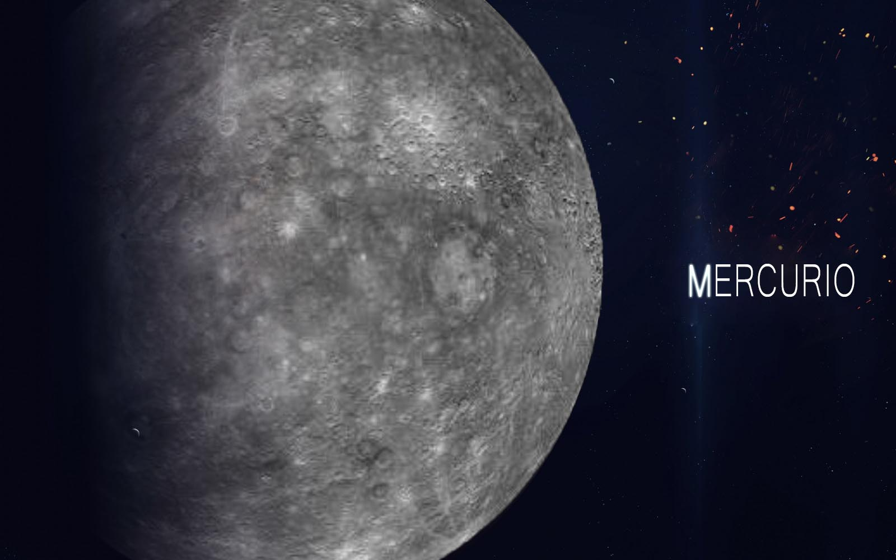
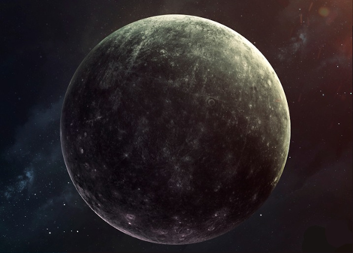

Mercúrio
Mercúrio é o menor e mais interno planeta do Sistema Solar, orbitando o Sol a cada 87,969 dias terrestres. A sua órbita tem a maior excentricidade e o seu eixo apresenta a menor inclinação em relação ao plano da órbita dentre todos os planetas do Sistema Solar. Mercúrio completa três rotações em torno de seu eixo a cada duas órbitas. O periélio da órbita de Mercúrio apresenta uma precessão de 5 600 segundos de arco por século, um fenômeno completamente explicado apenas a partir do século XX pela Teoria da Relatividade Geral formulada por Albert Einstein. A sua aparência é brilhante quando observado da Terra, tendo uma magnitude aparente que varia de −2,6 a 5,7, embora não seja facilmente observado pois sua separação angular do Sol é de apenas 28,3º. Uma vez que Mercúrio normalmente se perde no intenso brilho solar, exceto em eclipses solares, só pode ser observado a olho nu durante o crepúsculo matutino ou vespertino.
Mercúrio tem uma aparência similar à da Lua com crateras de impacto e planícies lisas, não possuindo satélites naturais nem uma atmosfera substancial. Entretanto, diferentemente da Lua, possui uma grande quantidade de ferro no núcleo que gera um campo magnético, cuja intensidade é cerca de 1% da intensidade do campo magnético da Terra. É um planeta excepcionalmente denso devido ao tamanho relativo de seu núcleo. A temperatura em sua superfície varia de 90 a 700 K (−183 °C a 427 °C). O ponto subsolar é a região mais quente e o fundo das crateras perto dos polos as regiões mais frias.